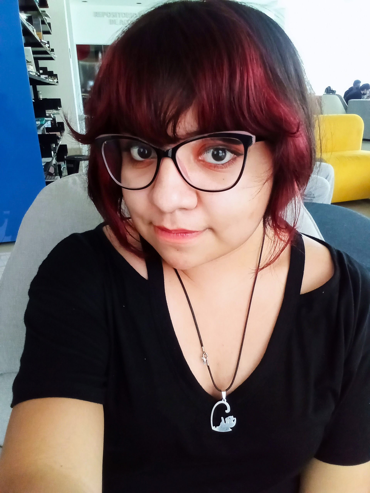

¿Quien soy yo?
Hola, mi nombre es María Jacqueline Hernández Rascón soy originaria del estado de Puebla y actualmente me encuentro estudiando la Licenciatura en Diseño Gráfico en la Benemérita Universidad Autónoma de Puebla.
Me considero una persona creativa y apasionada; que le gusta trabajar en equipo principalmente para contemplar diferentes puntos de vista.
Cuento con conocimientos de fotografía publicitaria, comic e historieta, procesos gráficos, modelado y trabajo con diversos materiales como lápices de colores, bolígrafo, gis pastel, lápiz conté, tinta china, acuarela e incluso técnicas digitales.
Mi familia, mi pareja y mis amigos son lo más importante ya que cuento con su apoyo para cumplir mis metas a futuro como el de terminar con éxito la licenciatura para eventualmente especializarme en el área de ilustración y procesos gráficos, mientras estudio poder trabajar en una imprenta, para que dentro de unos años pueda abrir la propia que se especialice en serigrafia y encuadernado.
Cuento con conocimientos de fotografía publicitaria, comic e historieta, manejo aerografía y serigrafía, además de trabajar con diversos materiales como lápices de colores, bolígrafo, gis pastel, lápiz conté, tinta china, acuarela e incluso técnicas digitales.